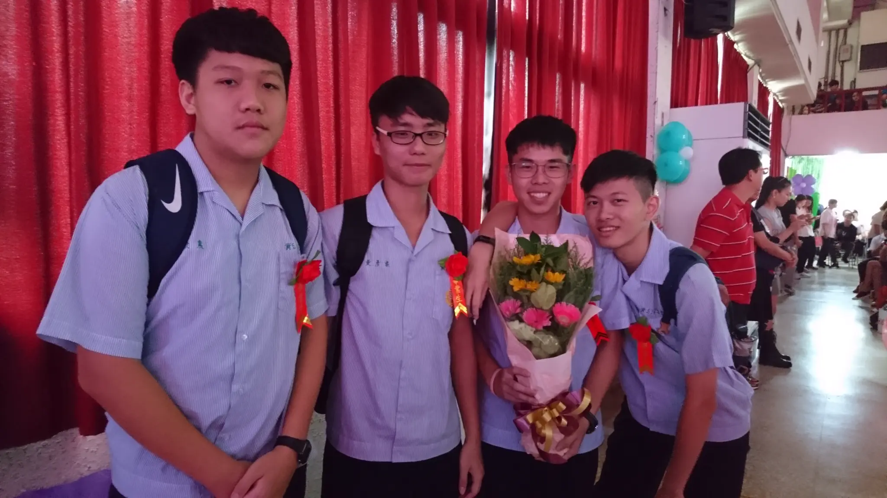
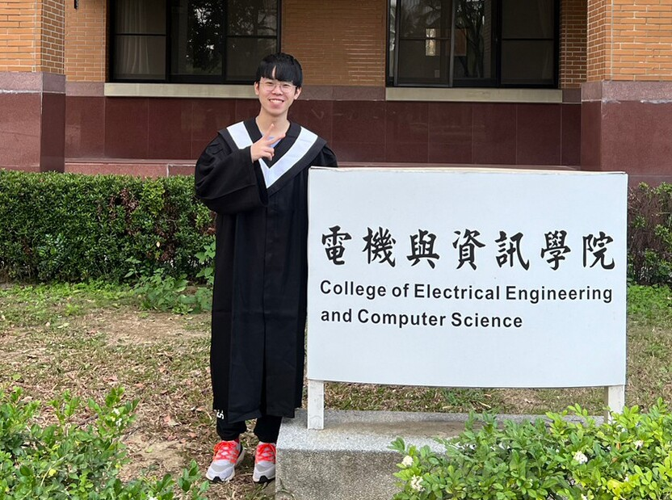
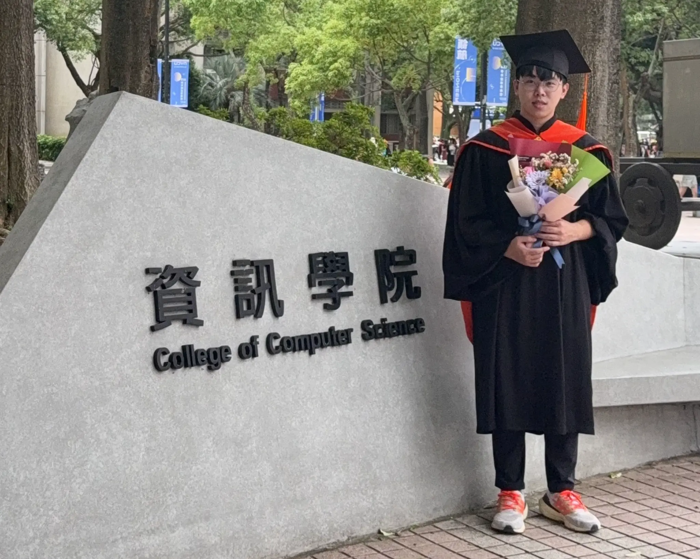

林垣志｜個人簡介
關於我
我畢業於國立陽明交通大學數據科學與工程研究所，研究聚焦於 生成式影片編輯與電腦視覺。碩士研究深入探討多物件影片中的屬性控制與身分一致性；我也曾參與臨床手術時間預測、資料探勘研究與電腦視覺專案。 第一作者論文獲 IEEE ICIP 2026 接受並發表，持續把 AI 研究轉化為可驗證、可落地的工程成果。
Connect on LinkedIn林垣志｜個人簡介
我畢業於國立陽明交通大學數據科學與工程研究所，研究聚焦於 生成式影片編輯與電腦視覺。碩士研究深入探討多物件影片中的屬性控制與身分一致性；我也曾參與臨床手術時間預測、資料探勘研究與電腦視覺專案。 第一作者論文獲 IEEE ICIP 2026 接受並發表，持續把 AI 研究轉化為可驗證、可落地的工程成果。
Connect on LinkedIn
民國 105 年 09 月 — 108 年 06 月
資訊科

民國 108 年 09 月 — 112 年 06 月
電腦與通訊工程系

民國 112 年 09 月 — 115 年 05 月
資訊學院・數據科學與工程研究所
從碩士論文到研究助理計畫，我將生成式 AI、電腦視覺與臨床資料建模的技術能力，落實在可檢驗的研究成果與系統實作。
2023.09 — 2026.05
2023.09 — 2026.05
2021.09 — 2022.06
從生成式模型到工程實作，我把研究能力、實驗設計與程式工具整合成能解決問題的技術組合。
研究核心
聚焦多物件影片編輯、生成式模型控制與參數高效微調。
視覺理解
以視覺模型和多目標追蹤處理影像與影片任務。
模型與資料
從資料處理、模型比較到指標評估，建立可追溯的實驗流程。
工程工具
以常用語言和協作工具完成研究原型與系統實作。